Problem Statement 2
Team 032 – Himalayan Coders
Himanshu Rathor · Ankur Maurya · Hemendra Kumar Sharma
Adnan Mustafa · Bojannagari Pavan Kumar Reddy
The team plans and tracks its work in Jira (project key KAN). Epics group the work of each milestone or sprint. Tasks carry one owner, a start date and a due date, and move across the board columns To Do, In Progress, In Review and Done. The Jira Timeline view is our Gantt chart and the Board view is our Kanban board. Each task records its owner, so both views show every member's contribution.
| Member | Roles |
|---|---|
| Himanshu Rathor | Scrum Master, Product Manager |
| Ankur Maurya | Backend Developer, Frontend Developer |
| Hemendra Kumar Sharma | Frontend Developer, Backend Developer |
| Adnan Mustafa | Tester, Code Reviewer |
| Bojannagari Pavan Kumar Reddy | Code Reviewer, Tester |
| Phase | Dates | Focus |
|---|---|---|
| Milestone 1 | until 25 Oct | User requirements |
| Milestone 2 | 26 Oct – 1 Nov | Scheduling, design, frontend pages |
| Sprint 1 (Milestone 3) | 2 Nov – 22 Nov | APIs, test cases and user testing for the core flow |
| Sprint 2 (Milestone 4) | 23 Nov – 6 Dec | APIs, test cases and user testing for the rest of the flow |
| Milestone 5 | 7 Dec – 20 Dec | Final report, demo video, working prototype |
| Jira task | User stories | Dates |
|---|---|---|
| Registration and login APIs | US-S01, US-M01 | 2 – 8 Nov |
| Student and mentor profile APIs | US-S02, US-M02, US-C05 | 6 – 12 Nov |
| Admin dashboard and role-based access APIs | US-C01, US-C06 | 9 – 15 Nov |
| Match creation APIs | US-C02 | 12 – 18 Nov |
| Test cases, pytest and Swagger YAML | all of the above | 9 – 20 Nov |
| User feedback session and Sprint 2 plan | – | 20 – 22 Nov |
| Jira task | User stories | Dates |
|---|---|---|
| Match confirmation and notification APIs | US-C03 | 23 – 29 Nov |
| Student goals, preferences and availability APIs | US-S03 to US-S06 | 23 – 29 Nov |
| Match status management and overview APIs | US-C04, US-C07 | 26 Nov – 2 Dec |
| Student connection view, readiness, concern, feedback and status APIs | US-S07 to US-S11 | 28 Nov – 3 Dec |
| Test cases, pytest and Swagger YAML | all of the above | 30 Nov – 5 Dec |
| User feedback session and final-phase plan | – | 4 – 6 Dec |
All 21 user stories from Milestone 1 are covered across the two sprints.
Each sprint is split into weekly iterations. Every sprint ends with a user feedback session whose findings shape the next sprint plan. Tasks are reviewed by the Code Reviewers and tested by the Testers before they move to Done.
The Scrum Master leads two scrum meetings each week. Each meeting covers what was done, what is planned next and any blockers. Minutes are kept for every meeting.
| Date | Attendees | Discussed / decisions | Actions (owner, due date) |
|---|---|---|---|
The platform follows a client-mediated model. Students and mentors each maintain their own profile, but they cannot browse each other. The client (coordinator) reviews both sides, proposes a match, and tracks it until it ends.
| Component | Responsibilities |
|---|---|
| Authentication and roles | Registration, login, and three roles: student, mentor and administrator. Every action is checked against the role on the server, because hiding a link in the interface is not security. |
| Student module | Maintain goals, skills, preferences and availability. View the assigned mentor after the match is confirmed. Give a readiness response, feedback, and raise concerns. |
| Mentor module | Maintain qualifications, expertise, bio and availability slots. Accept or decline match requests, and see accepted mentees. |
| Administrator module | Verify mentor profiles, propose matches, change match status, review concerns, and see delayed proposals and an overview by status. |
| Match workflow | Controls the status of a match: proposed, confirmed, active, completed or cancelled. Only allowed transitions are accepted and each change is logged. |
| Notifications | Tells the people involved when a match is proposed, accepted, declined or changes status. |
| Data layer | A relational database holding users, profiles, availability, matches, status log, feedback, concerns and notifications. |
Match status flow: proposed → confirmed (mentor accepts) → active → completed. A proposed or confirmed or active match can be cancelled. A declined proposal becomes cancelled, and the coordinator can then propose a new match.
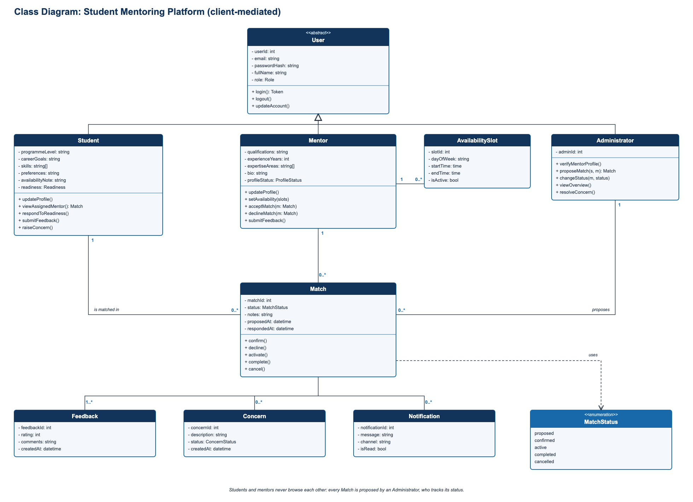
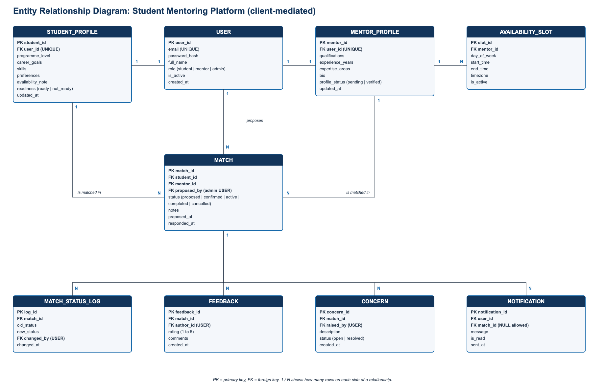
| Table | Purpose and key constraints |
|---|---|
| USER | One row per account. Email is unique. Role is student, mentor or admin. |
| STUDENT_PROFILE | Goals, skills, preferences and readiness. One per student user (user_id unique). |
| MENTOR_PROFILE | Qualifications, expertise and verification status. One per mentor user. |
| AVAILABILITY_SLOT | Weekly time slots of a mentor. Many slots per mentor. |
| MATCH | Links a student and a mentor. Records the administrator who proposed it and its status. |
| MATCH_STATUS_LOG | History of every status change, with who changed it and when. |
| FEEDBACK | Rating and comments about a match. |
| CONCERN | A concern raised about a match, open until the coordinator resolves it. |
| NOTIFICATION | Messages sent to users, optionally linked to a match. |
The frontend is a set of 11 linked pages in plain HTML, CSS and JavaScript. It runs from the file index.html without installing anything. Sample data is kept in the browser so the whole flow can be tried: the coordinator proposes a match, the mentor accepts, and only then does the student see the mentor. There is no backend yet; the API is built in Milestones 3 and 4.
| Page | Role | Purpose |
|---|---|---|
| index, register | all | Log in and create an account |
| student | student | Dashboard, match status, notifications |
| student-profile | student | Goals, skills, preferences, availability |
| student-mentor | student | Assigned mentor, readiness, feedback, concerns |
| mentor | mentor | Accept or decline requests, mentees |
| mentor-profile | mentor | Background and availability |
| admin | coordinator | Overview by status, delayed proposals, concerns |
| admin-mentors | coordinator | Verify mentor profiles |
| admin-matches | coordinator | Propose matches, change status |
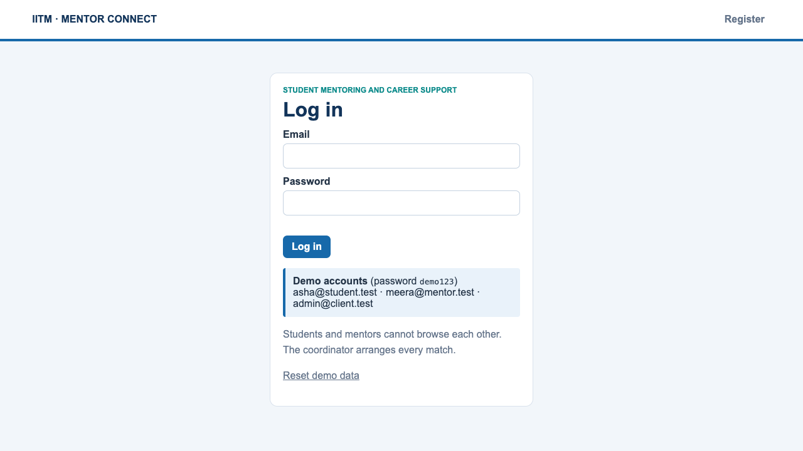
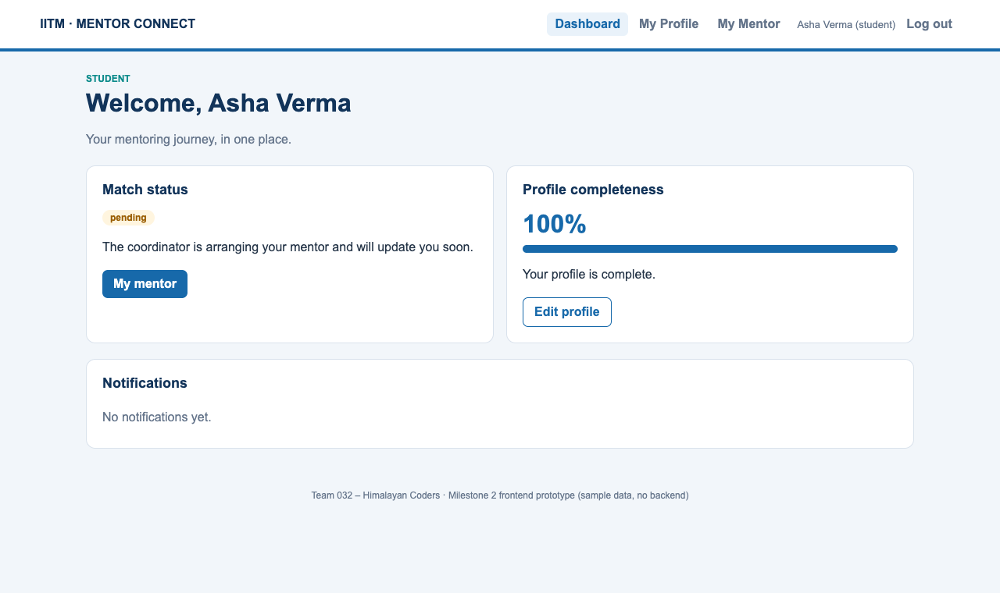
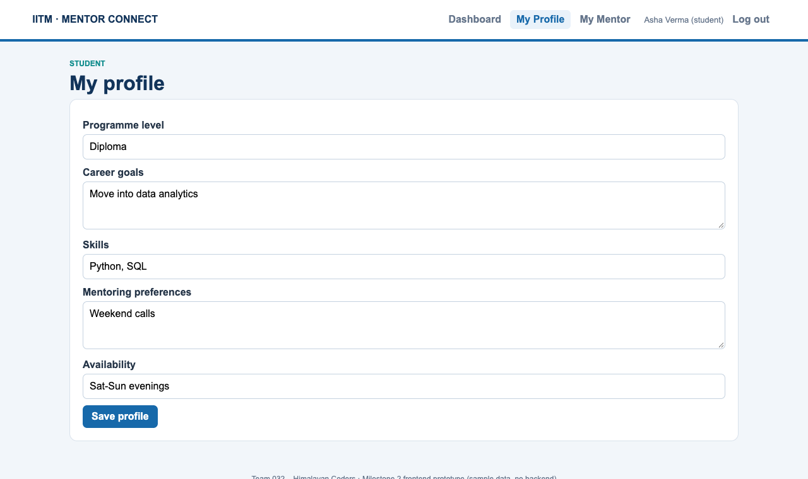
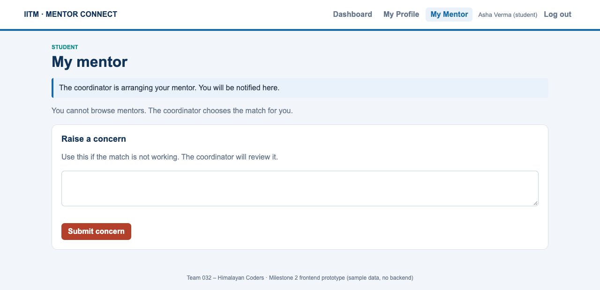
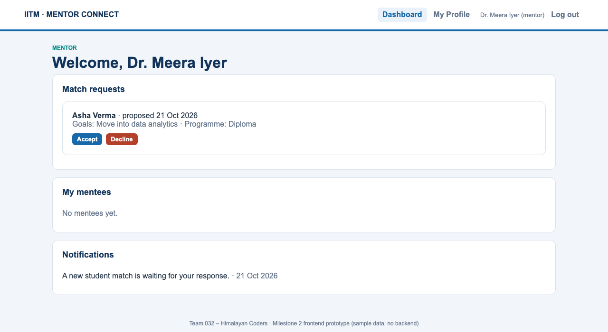
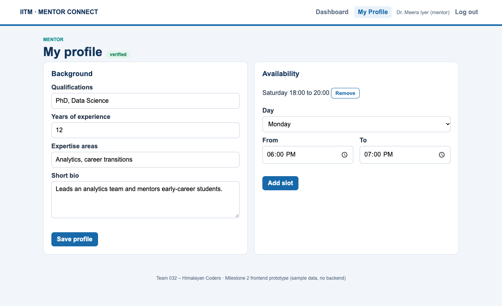
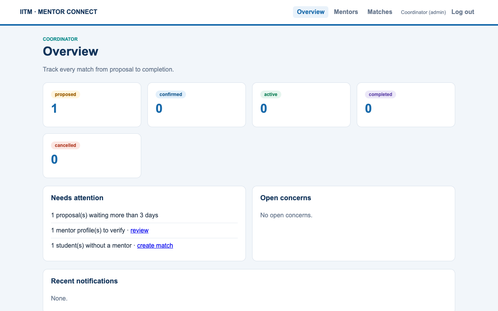
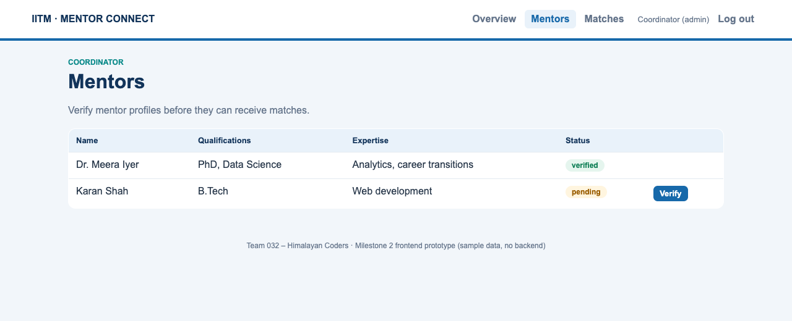
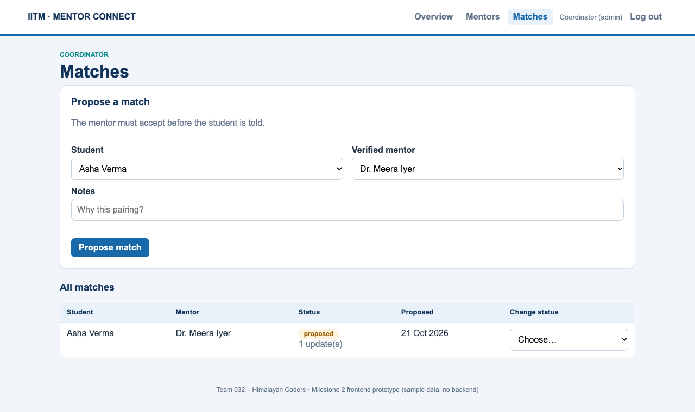
The frontend ZIP contains the 11 pages, styles.css, app.js and a README. To run it, unzip, open the frontend folder and open index.html in a modern browser. The demo password is demo123 for the student, mentor and coordinator accounts listed on the login page.